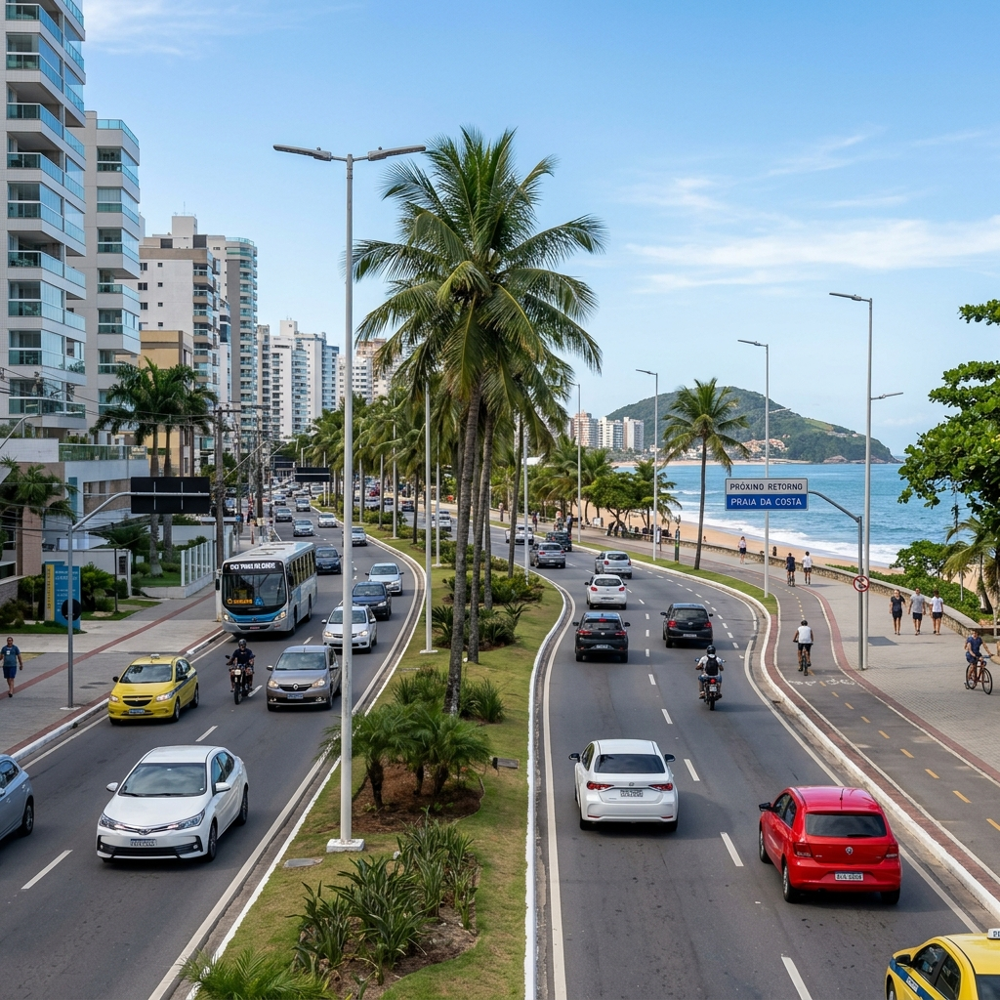

ANUNCIE NA EMISSORA MAIS OUVIDA
Conecte sua empresa a mais de 2.6 milhões de capixabas. Spots e banners.
Rádio Pulso FM
Entrevista exclusiva abordando as obras de saneamento básico, drenagem, turismo e o futuro econômico do município.
Acompanhe a cobertura dos eventos festivos, shows e a tradicional transferência simbólica da capital do Estado.
Descubra os maiores cartões-postais da cidade mais antiga do Espírito Santo em um passeio repleto de história e belezas.

Cidade 06:30Veja os detalhes das novas intervenções de infraestrutura viária iniciadas na cidade para melhorar a circulação urbana.